GO 對戰聯盟 · 無 CP 上限
Pokémon GO 大師聯盟排名 Top 100
大師聯盟沒有 CP 上限，主角是傳說、幻之寶可夢與高種族值的寶可夢；能養多高就多高，IV 越高越好。這份榜單依 PvPoke 對戰模擬的分數排序， 列出前 100 名寶可夢與推薦招式；想知道你手上那隻的 IV 排第幾，點右邊的「查 IV」直接帶入。
- 資料更新 2026-11-05
- 收錄 409 隻・顯示前 100 名
- ★ 傳說招式
- 1
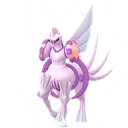
帕路奇亞（起源）水龍98.7一般龍息特殊水流尾、亞空裂斬查 IV - 2
 蒼響（劍之王）妖精鋼97.8一般金屬爪特殊近身戰、巨獸斬查 IV
蒼響（劍之王）妖精鋼97.8一般金屬爪特殊近身戰、巨獸斬查 IV - 3基格爾德（完全體）龍地面94.4一般龍尾特殊咬碎、重踏查 IV
- 4
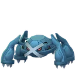
巨金怪鋼超能力94.3一般暗影爪★特殊彗星拳★、地震查 IV - 5
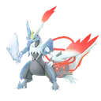
酋雷姆（焰白）龍冰94.2一般龍息特殊交錯火焰、極寒冷焰查 IV - 6
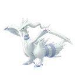
萊希拉姆龍火94.0一般龍息特殊交錯火焰★、流星群查 IV - 7
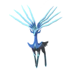
哲爾尼亞斯妖精94.0一般大地掌控★特殊近身戰、月亮之力查 IV - 8
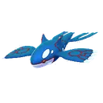
蓋歐卡水93.9一般攀瀑特殊雪崩、根源波動★查 IV - 9
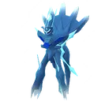
帝牙盧卡（起源）鋼龍93.8一般龍息特殊時光咆哮、鐵頭查 IV - 10
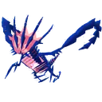
無極汰那毒龍92.9一般龍尾特殊極巨炮★、噴射火焰查 IV - 11
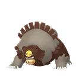
月月熊地面一般92.9一般抓特殊冰凍拳、十萬馬力★查 IV - 12
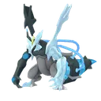
酋雷姆（闇黑）龍冰92.7一般龍尾特殊冰凍伏特、交錯閃電查 IV - 13萊希拉姆暗影龍火92.7一般龍息特殊交錯火焰★、流星群查 IV
- 14洛奇亞超能力飛行92.4一般龍尾特殊氣旋攻擊★、大地之力查 IV
- 15
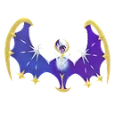
露奈雅拉超能力幽靈92.4一般暗影爪特殊暗影球、月亮之力查 IV - 16藏瑪然特（盾之王）格鬥鋼92.2一般冰凍牙特殊近身戰、巨獸彈查 IV
- 17月月熊暗影地面一般92.0一般抓特殊冰凍拳、十萬馬力★查 IV
- 18
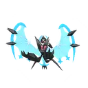
奈克洛茲瑪（拂曉之翼）超能力幽靈91.8一般暗影爪特殊惡之波動、暗影之光查 IV - 19
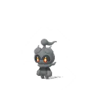
瑪夏多格鬥幽靈90.6一般暗影爪特殊近身戰、冰凍拳查 IV - 20
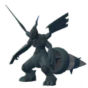
捷克羅姆龍電90.6一般龍息特殊逆鱗、交錯閃電★查 IV - 21捷克羅姆暗影龍電90.4一般龍息特殊逆鱗、交錯閃電★查 IV
- 22
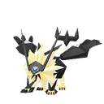
奈克洛茲瑪（黃昏之鬃）超能力鋼90.3一般暗影爪特殊惡之波動、流星閃衝查 IV - 23洛奇亞暗影超能力飛行90.1一般龍尾特殊氣旋攻擊★、大地之力查 IV
- 24
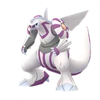
帕路奇亞暗影水龍89.8一般龍息特殊水流尾、流星群查 IV - 25
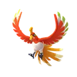
鳳王火飛行89.4一般燒盡特殊勇鳥猛攻、神聖之火★查 IV - 26
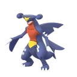
烈咬陸鯊暗影龍地面88.8一般龍尾特殊龍捲風、大地之力★查 IV - 27巨金怪暗影鋼超能力88.8一般暗影爪★特殊彗星拳★、地震查 IV
- 28固拉多地面88.7一般龍尾特殊火焰拳★、斷崖之劍★查 IV
- 29美錄梅塔鋼88.4一般電擊特殊鋼拳雙擊★、爆裂拳查 IV
- 30
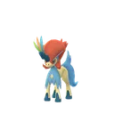
凱路迪歐（覺悟）水格鬥88.2一般踢倒特殊神秘之劍★、水流噴射查 IV - 31烈咬陸鯊龍地面87.8一般龍尾特殊龍捲風、大地之力★查 IV
- 32
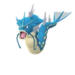
暴鯉龍暗影水飛行87.5一般龍息特殊水流尾★、龍捲風查 IV - 33蓋歐卡暗影水86.7一般攀瀑特殊雪崩、根源波動★查 IV
- 34帕路奇亞水龍86.2一般龍息特殊水流尾、大字爆炎查 IV
- 35
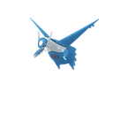
拉帝歐斯暗影龍超能力86.1一般龍息特殊波導彈、潔淨光芒★查 IV - 36
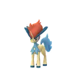
凱路迪歐（平常）水格鬥86.0一般踢倒特殊水流噴射、聖劍查 IV - 37轟擂金剛猩草86.0一般抓特殊鼓擊、大地之力查 IV
- 38伊裴爾塔爾惡飛行86.0一般突襲特殊惡之波動、死亡之翼★查 IV
- 39
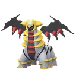
騎拉帝納（別種）暗影幽靈龍85.9一般龍息特殊龍爪、影子偷襲查 IV - 40
 花潔夫人妖精85.8一般妖精之風特殊月亮之力、潑冷水★查 IV
花潔夫人妖精85.8一般妖精之風特殊月亮之力、潑冷水★查 IV - 41
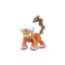
土地雲（靈獸）地面飛行85.8一般泥巴射擊特殊熱沙風暴★、尖石攻擊查 IV - 42索爾迦雷歐超能力鋼85.7一般火焰旋渦特殊精神之牙、鐵頭查 IV
- 43
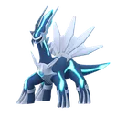
帝牙盧卡暗影鋼龍85.0一般龍息特殊鐵頭、流星群查 IV - 44
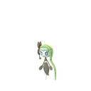
美洛耶塔（歌聲）一般超能力85.0一般念力特殊精神衝擊、魔法閃耀查 IV - 45西獅海壬水妖精84.1一般攀瀑特殊月亮之力、加農水砲★查 IV
- 46帝牙盧卡鋼龍84.0一般龍息特殊鐵頭、流星群查 IV
- 47
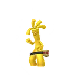
賽富豪鋼幽靈83.9一般禍不單行特殊暗影球、真氣彈查 IV - 48
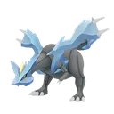
酋雷姆龍冰83.8一般龍息特殊冰封世界★、龍爪查 IV - 49拉帝歐斯龍超能力83.7一般龍息特殊波導彈、潔淨光芒★查 IV
- 50
 快龍暗影龍飛行83.6一般龍息特殊雷電拳、蠻力查 IV
快龍暗影龍飛行83.6一般龍息特殊雷電拳、蠻力查 IV - 51
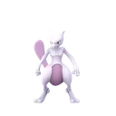
超夢暗影超能力83.6一般精神利刃特殊精神擊破★、暗影球★查 IV - 52騎拉帝納（別種）幽靈龍83.5一般龍息特殊龍爪、影子偷襲查 IV
- 53固拉多暗影地面83.2一般龍尾特殊火焰拳★、斷崖之劍★查 IV
- 54
 三首惡龍暗影惡龍83.1一般龍息特殊狂舞揮打★、飛翔查 IV
三首惡龍暗影惡龍83.1一般龍息特殊狂舞揮打★、飛翔查 IV - 55
 黏美龍龍82.6一般龍息特殊水流尾、流星群查 IV
黏美龍龍82.6一般龍息特殊水流尾、流星群查 IV - 56鳳王暗影火飛行82.6一般燒盡特殊勇鳥猛攻、神聖之火★查 IV
- 57
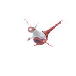
拉帝亞斯暗影龍超能力82.0一般龍息特殊波導彈、薄霧球★查 IV - 58暴鯉龍水飛行81.8一般龍息特殊水流尾★、咬碎查 IV
- 59波克基斯妖精飛行81.8一般啄特殊魔法閃耀、波導彈★查 IV
- 60
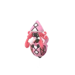
卡璞・蝶蝶超能力妖精81.6一般驚嚇特殊精神衝擊、自然之怒★查 IV - 61
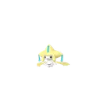
基拉祈鋼超能力81.1一般念力特殊破滅之願、波導彈查 IV - 62拉帝亞斯龍超能力81.1一般龍息特殊波導彈、薄霧球★查 IV
- 63眷戀雲（靈獸）妖精飛行81.0一般妖精之風特殊魔法火焰、月亮之力查 IV
- 64
 班基拉斯暗影岩石惡80.7一般龍息特殊狂舞揮打、尖石攻擊查 IV
班基拉斯暗影岩石惡80.7一般龍息特殊狂舞揮打、尖石攻擊查 IV - 65超夢超能力80.6一般精神利刃特殊精神擊破★、暗影球★查 IV
- 66
 修建老匠暗影格鬥80.5一般發勁特殊爆裂拳、狂舞揮打★查 IV
修建老匠暗影格鬥80.5一般發勁特殊爆裂拳、狂舞揮打★查 IV - 67快龍龍飛行80.4一般龍息特殊雷電拳、蠻力查 IV
- 68超甲狂犀暗影地面岩石80.2一般擲泥特殊直衝鑽、岩石炮★查 IV
- 69超甲狂犀地面岩石80.1一般擲泥特殊直衝鑽、岩石炮★查 IV
- 70
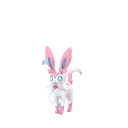
仙子伊布妖精80.1一般妖精之風特殊吸取之吻、暗影球查 IV - 71席多藍恩暗影火鋼80.0一般火焰旋渦特殊熔岩風暴★、大地之力查 IV
- 72蓋諾賽克特（閃電）蟲鋼79.8一般連斬特殊磁鐵炸彈、高科技光炮 電查 IV
- 73蓋諾賽克特（冰凍）蟲鋼79.6一般連斬特殊磁鐵炸彈、高科技光炮 冰★查 IV
- 74雷公暗影電79.6一般電擊特殊瘋狂伏特、波導彈查 IV
- 75戟脊龍龍冰79.5一般龍息特殊巨劍突擊★、雪崩查 IV
- 76
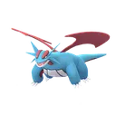
暴飛龍暗影龍飛行79.5一般龍尾特殊飛翔、狂舞揮打查 IV - 77
 武道熊師（一擊流）格鬥惡79.5一般突襲特殊爆裂拳、以牙還牙查 IV
武道熊師（一擊流）格鬥惡79.5一般突襲特殊爆裂拳、以牙還牙查 IV - 78
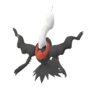
達克萊伊暗影惡79.2一般突襲特殊欺詐、暗影球查 IV - 79
 仆斬將軍惡鋼79.0一般踢倒特殊欺詐、鐵頭查 IV
仆斬將軍惡鋼79.0一般踢倒特殊欺詐、鐵頭查 IV - 80卡比獸暗影一般78.8一般精神波特殊泰山壓頂、地震查 IV
- 81三首惡龍惡龍78.6一般龍息特殊狂舞揮打★、飛翔查 IV
- 82
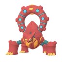
波爾凱尼恩火水78.5一般燒盡特殊熱水、大地之力查 IV - 83
 具甲武者暗影蟲水78.3一般連斬特殊水流噴射、十字剪查 IV
具甲武者暗影蟲水78.3一般連斬特殊水流噴射、十字剪查 IV - 84
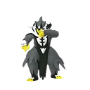
武道熊師（連擊流）格鬥水78.1一般攀瀑特殊水流噴射、爆裂拳查 IV - 85班基拉斯岩石惡78.0一般龍息特殊狂舞揮打、尖石攻擊查 IV
- 86席多藍恩火鋼77.9一般火焰旋渦特殊熔岩風暴★、大地之力查 IV
- 87雷公電77.8一般電擊特殊波導彈、瘋狂伏特查 IV
- 88具甲武者蟲水77.7一般連斬特殊水流噴射、十字剪查 IV
- 89
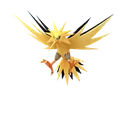
閃電鳥電飛行77.6一般電擊★特殊啄鑽、十萬伏特查 IV - 90閃電鳥暗影電飛行77.6一般電擊★特殊啄鑽、熱風查 IV
- 91河馬獸暗影地面77.5一般潑沙特殊氣象球 岩石、大地之力查 IV
- 92卡比獸一般77.2一般精神波特殊泰山壓頂、地震查 IV
- 93
 棄世猴格鬥幽靈76.9一般雙倍奉還特殊憤怒之拳★、冰凍拳查 IV
棄世猴格鬥幽靈76.9一般雙倍奉還特殊憤怒之拳★、冰凍拳查 IV - 94象牙豬暗影冰地面76.9一般細雪特殊十萬馬力、冰錐查 IV
- 95棄世猴暗影格鬥幽靈76.8一般雙倍奉還特殊憤怒之拳★、冰凍拳查 IV
- 96蒼響（百戰勇者）妖精76.8一般電光一閃特殊瘋狂伏特、嬉鬧查 IV
- 97藏瑪然特（百戰勇者）格鬥76.8一般冰凍牙特殊近身戰、咬碎查 IV
- 98蓋諾賽克特（火焰）蟲鋼76.7一般連斬特殊磁鐵炸彈、高科技光炮 火★查 IV
- 99土地雲（化身）地面飛行76.6一般泥巴射擊特殊大地之力、岩崩查 IV
- 100
 杖尾鱗甲龍龍格鬥76.5一般龍尾特殊鱗片噪音★、快手還擊查 IV
杖尾鱗甲龍龍格鬥76.5一般龍尾特殊鱗片噪音★、快手還擊查 IV
完整排名（409 隻）與自己的 IV 名次，請用 PvP IV 排名查詢工具。也可以看超級聯盟排名、高級聯盟排名。
大師聯盟常見問題
大師聯盟是什麼？
Pokémon GO 對戰聯盟（GO Battle League）中沒有 CP 上限的聯盟。因為不限 CP，種族值高的傳說、幻之寶可夢與大型寶可夢是主力，通常要升到 50 級（或最佳夥伴 51 級）才有競爭力。
這份排名的分數怎麼來的？
分數來自 PvPoke 的對戰模擬：讓每隻寶可夢用推薦招式，和整個聯盟的常見對手以各種護盾數對打，綜合勝率與表現算成 0～100 的分數。分數越高，代表在目前環境越全面，但實戰仍要看隊伍搭配與對手。
★ 招式是什麼意思？
標 ★ 的是「傳說招式」：目前只能在特定活動或用厲害招式學習器學到。如果你的寶可夢沒有這個招式，強度會比排名低。
大師聯盟要什麼樣的 IV？
沒有 CP 上限，所以攻擊、防禦、HP 都是越高越好，15/15/15 是最理想的。IV 差一兩點影響不大，但要升到 50 級需要大量 XL 糖果，是大師聯盟最大的門檻。
排名多久更新？
本站每天會多次檢查 PvPoke 的最新排名，前 100 名有變動就自動重新產生這頁，頁首的「資料更新」就是最近一次變動的日期。賽季更換或招式平衡調整後，排名通常會明顯變動。
找到想練的寶可夢了？
用 PvP IV 排名工具查你手上那隻的 IV 在大師聯盟排第幾，以及要升到幾級、CP 多少。